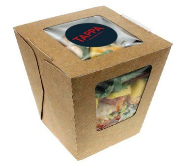
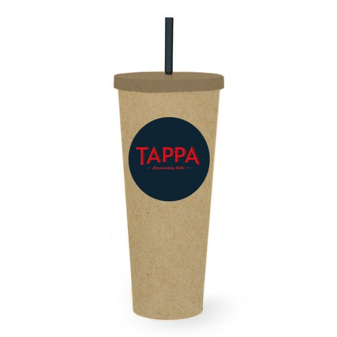
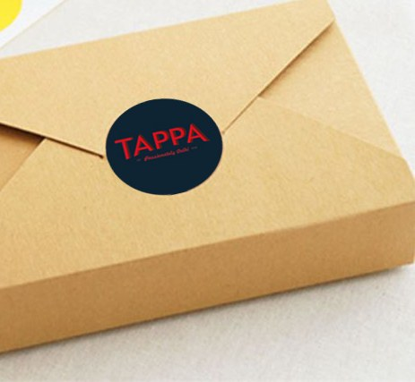
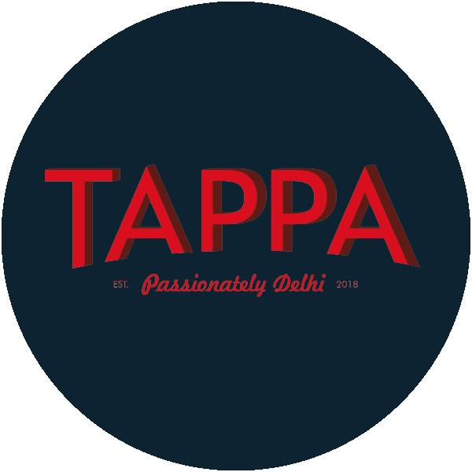

05Related Work
Packaging and identity for a Delhi eatery — a kraft-paper system sealed with a single navy-and-red mark. Eco, honest, and a little daft: passionately Delhi, est. 2018.
Tappa is a casual Delhi eatery. The brief was a mark and a packaging system that felt warm and unfussy — food you carry out, not ceremony. The answer is a navy-and-red roundel set on plain kraft: a seal you press onto a box, a cup, an envelope, and it's done.
The roundel does the branding; the kraft does the rest.




A roundel you can stamp on anything.
The identity is one circular seal — "TAPPA" in a tall red serif over the line Passionately Delhi · est. 2018, on deep navy. As a sticker it closes a box; as a print it brands a cup. One asset, applied everywhere, keeps a low-cost system looking deliberate.
A kraft packaging family — salad boxes with a window to the food, takeaway cups, and folded sandwich boxes — each finished with the seal. Eco materials, a single mark, and a tone that matches the food.